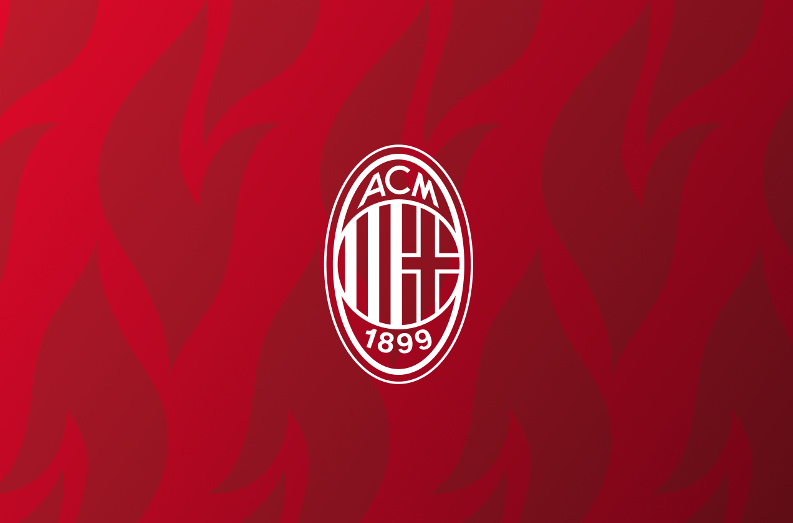
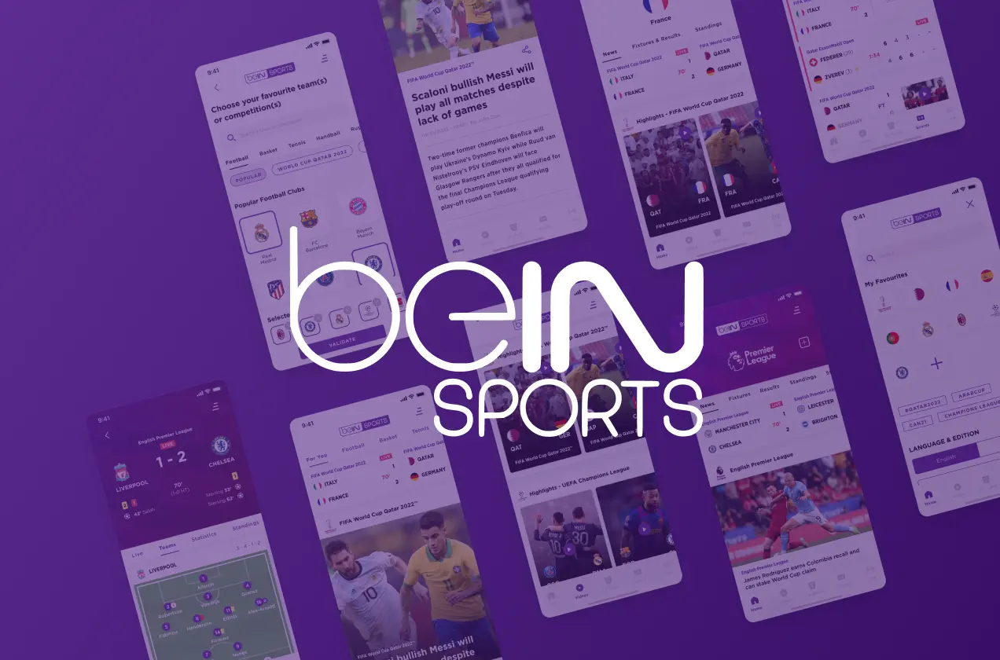
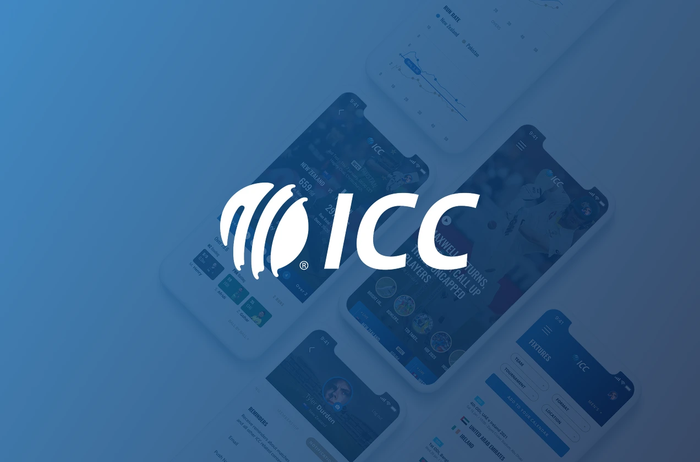
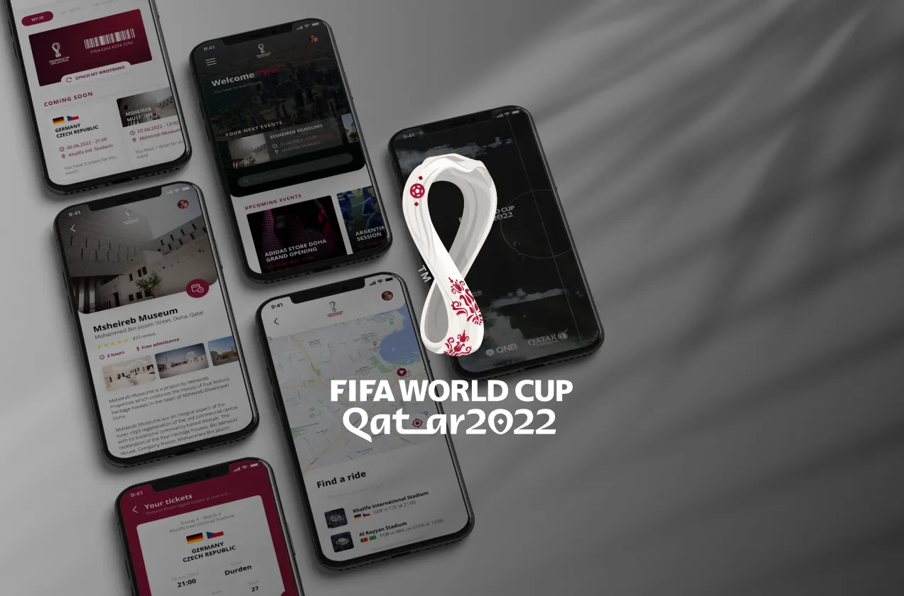
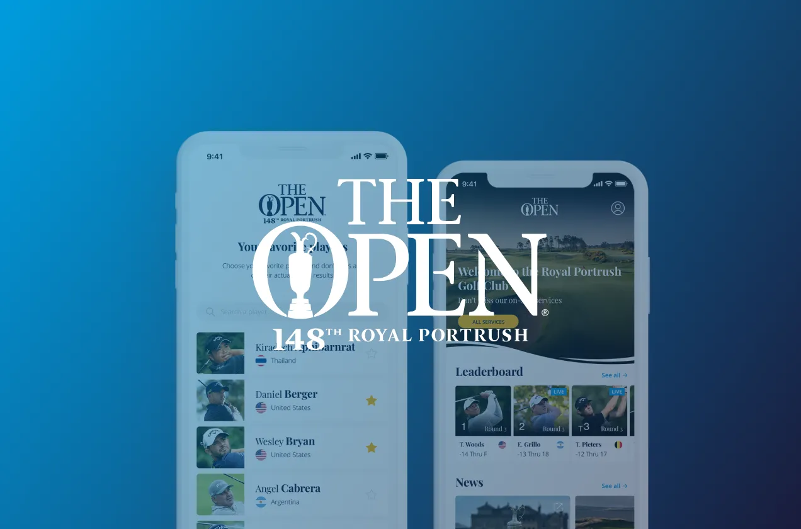
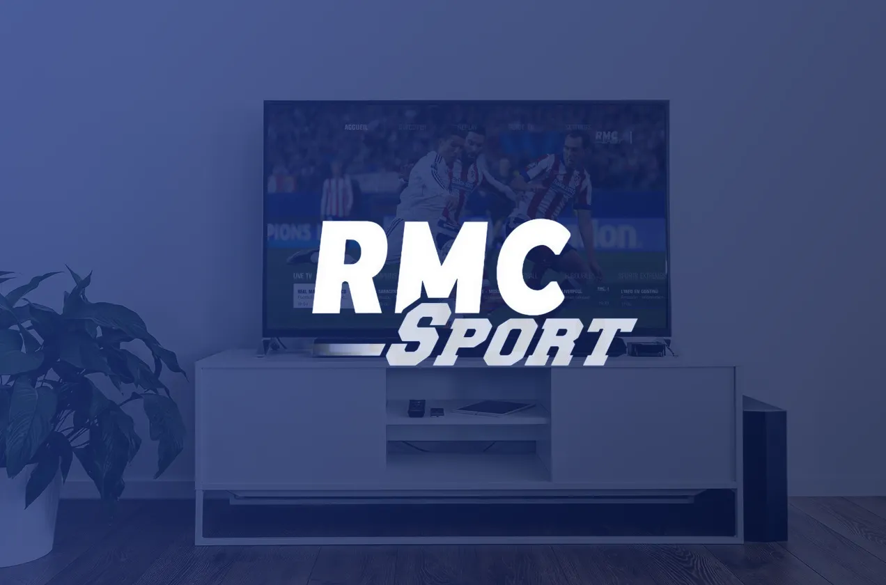
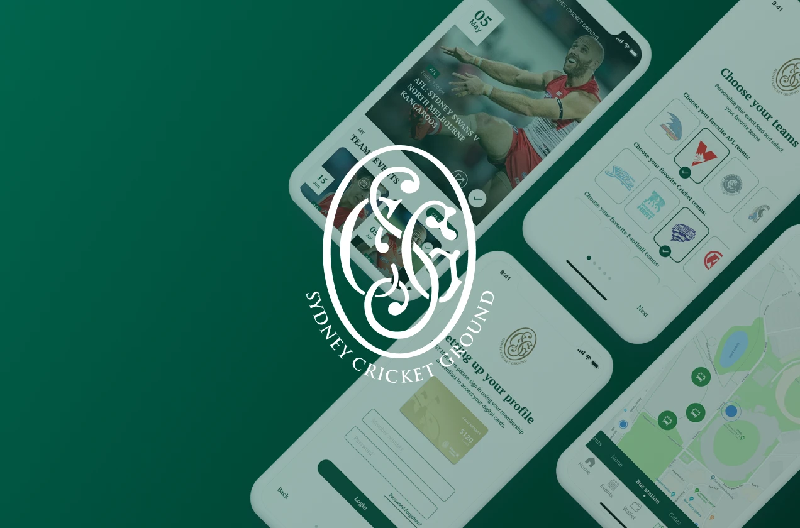
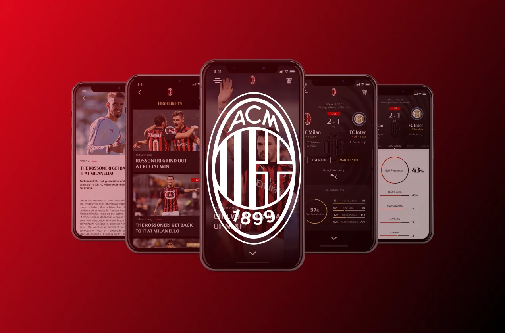

AC Milan 2026
Second digital transformation for AC Milan — redesigning the club's entire digital ecosystem across web and mobile platforms.
Senior UI Designer — Based in Paris
Senior UI Designer with 10+ years shaping digital products for clients across the sport and multimedia industries. I bridge the gap between aesthetics and usability to create experiences that truly resonate.

Second digital transformation for AC Milan — redesigning the club's entire digital ecosystem across web and mobile platforms.

Full redesign of beIN Sports News digital platforms — delivering a modern, content-first experience for one of the world's largest sports broadcasters.

Rebranding of the ICC's digital platforms — bringing cricket's global governing body into the modern era with a complete sport experience from news to data-rich matchcenters.

Dedicated second-screen digital product for the FIFA World Cup 2022 in Qatar — serving fans on-site with live data and hospitality features.

Digital experience for golf's oldest major championship — real-time scores, live content, and immersive storytelling inside your pocket.

Creation of a global OTT solution across TV, web and mobile — bringing content to the users wherever they are, whenever they want. Live channels, replays, documentaries and more.

Digital fan experience for one of Australia's most iconic venues — match day companion app with live stats, way finding, and in-seat ordering.

First digital overhaul for AC Milan — designing the club's first official app and web platform from scratch, setting the foundation for their digital presence.
Graduated from ECV Paris in Art Direction & Multimedia Design in 2014, I've been deep in the digital game — building digital products for major players across the sports industry — from clubs and leagues to broadcasters and media groups. For the past eleven years, I've been leading the creative team at Origins Digital (formerly Netco Sports), a French tech startup at the intersection of media, sports, and innovation. There, I shape user experiences, and keep our visual language consistent, smart, and future-proof.
My work lives at the intersection of usability and aesthetics — always grounded in the needs of real users. I believe a good UI should be invisible, and good UX should feel like magic.
On the side, I freelance, I paint tiny grimdark space warriors, and I lift heavy things for fun. Let's build something great — and make it beautiful and useful.
Leading the creative team on web products and custom digital platforms. Shipped the redesign of beIN Sports News digital platforms and a second AC Milan digital transformation.
Managed the creative team across mobile apps and websites for international sports clients. Key projects include the digital overhaul of AC Milan and the RMC Sport rebrand.
Junior design role focused on mobile app design for global sports organizations. Led the full creative production of the official UEFA Euro 2016 app.
Graduate internship in the Visual Identity department, supporting the team on day-to-day design work for international institutional clients.
Currently available for senior UI design roles.
Open to full-time and select freelance projects.